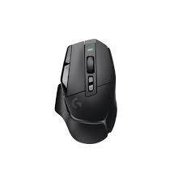
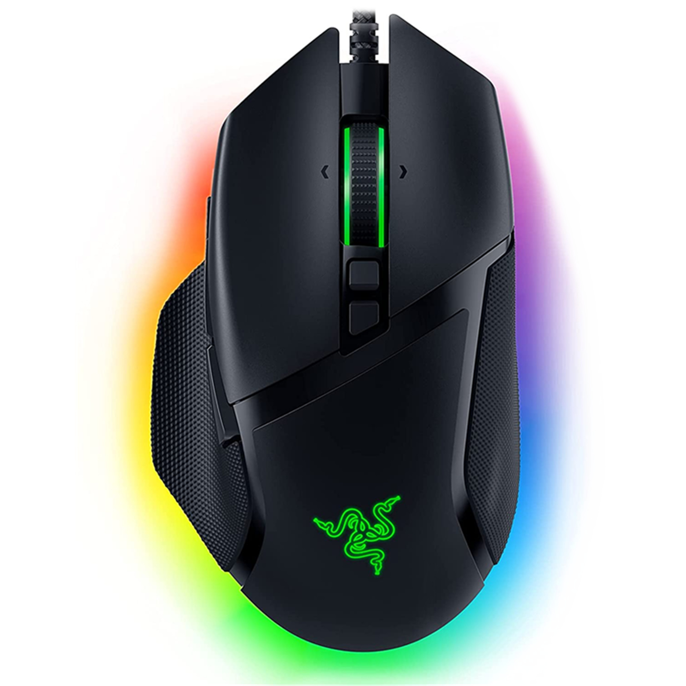
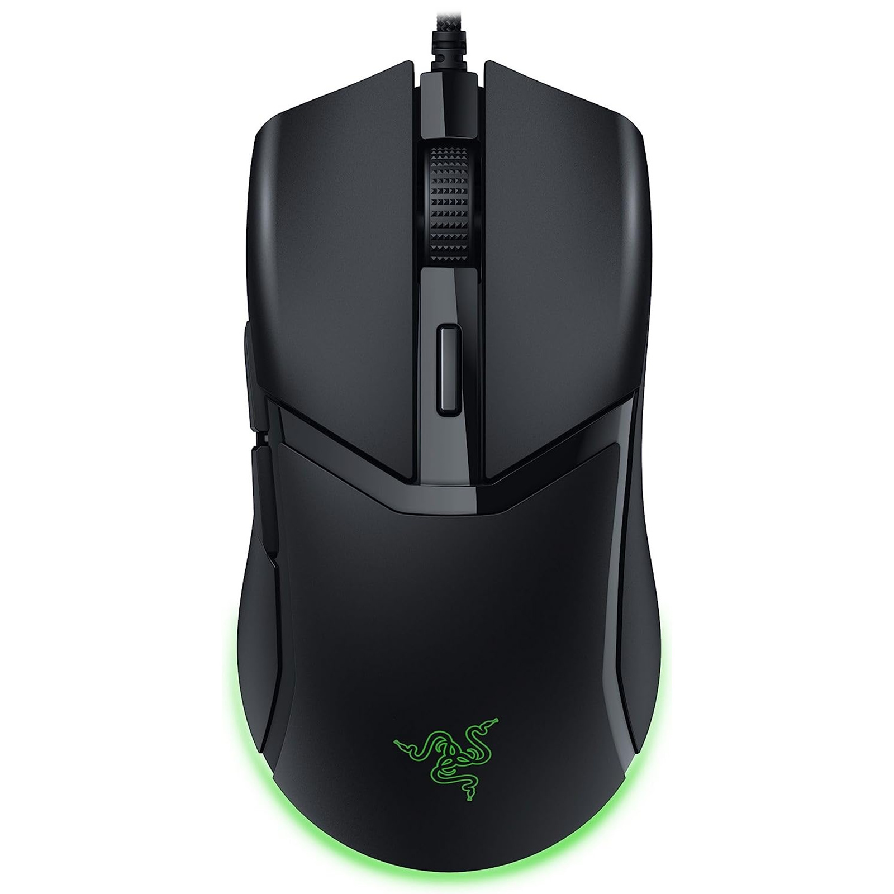
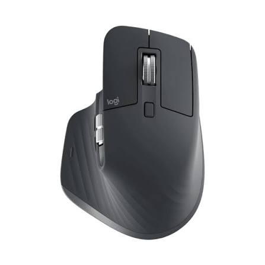
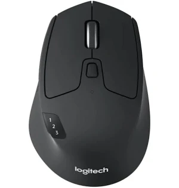

github: https://github.com/194500-cpu,
email: data2032@gmail.com
Hey! You really thought this page would only have contacts?
Here is a programming mouse ranking!!!
1st: Logitech g502x LIGHTSPEED

The two side buttons are suprisingly useful for programming, as
they can be mapped to shortcuts like Alt Tab in order to switch apps quickly.
This comes in handy when flicking between the programming editor and problem statement.
2nd: Razer Basilisk V3

This is similar to the G502x, however suffers from a reliability issue on the scroll wheel,
as it has broken for me atleast a few times. However, I would argue that it is more comfy to hold,
has a nicer "bassy click" to it and better pricing. Only other drawback is the lack of two side buttons.
3rd: Razer Cobra

Although this is a budget lightweight gaming mouse, I think that over long sessions heavy mice get tiring.
This mouse is a cheap investment that can save hand strain, however it lacks productivity features.
4th: Logitech Master 3

I my opinion, side scroll wheels are completely useless for programming, so this mouse is overpriced
for what it can offer to a programmer. Although the magnetic scroll wheel and silent click is nice,
it's rubber grip will wear out over time and its price is too steep.
5th: Logitech Triathlon

This mouse is a very, very long lasting one. One battery can go for 24 months, and it has a sleep mode,
so this will basically never need a recharge. It is best for school or work.